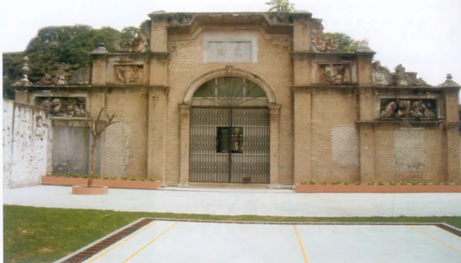
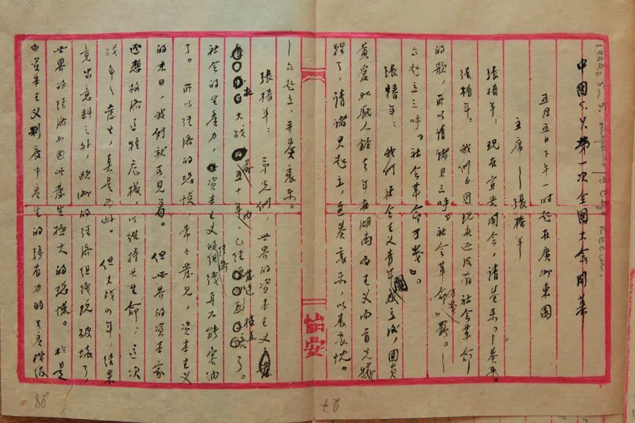
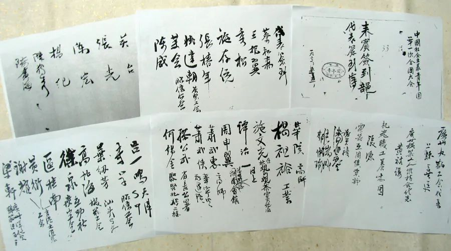
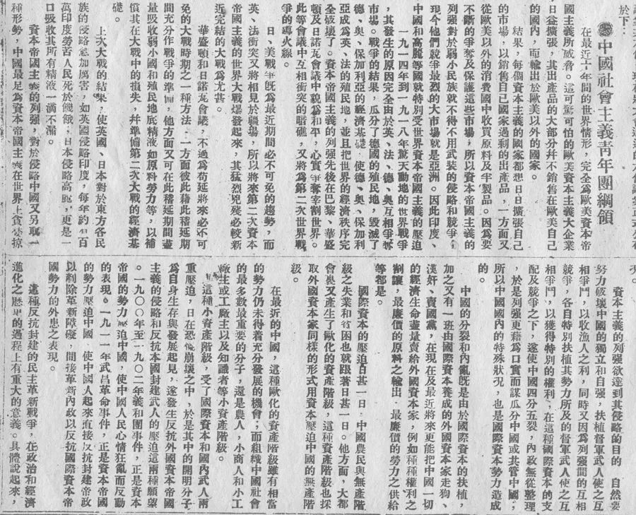
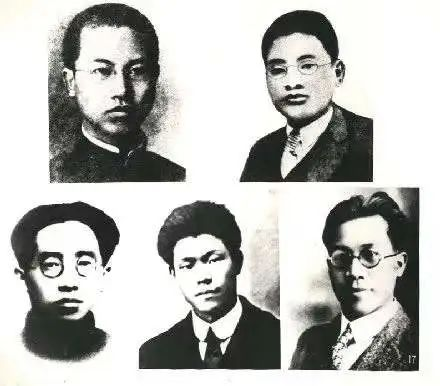
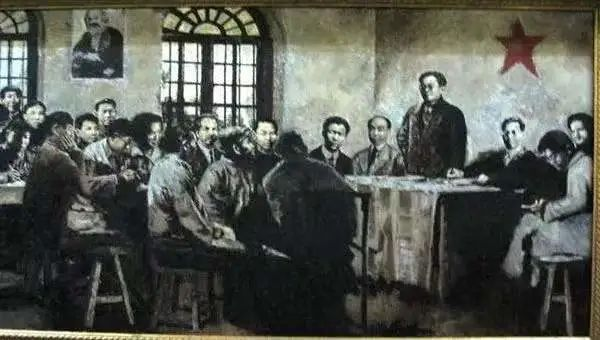

东南大学仪器科学与工程学院 寻迹梅庵实践团
官方微信
官方微博
寻 迹 梅 庵 ，薪 火 相 传
1920年8月间，中国共产党发起组创建了上海社会主义青年团。此后，北京、广州、长沙、武昌等地也先后成立了相应的团组织。但由于种种原因，全国的建团工作曾经一度中断。1921年7月，中国共产党第一次全国代表大会召开后，党决定在全国恢复和整顿社会主义青年团，作为党的预备学校，并吸收优秀团员入党，以壮大党的队伍。
团组织的壮大，革命斗争的发展迫切需要正式成立全国性的团中央，订出团的纲领和章程，以加强对青年运动的统一领导。
为此，团的临时中央局于1922年2月12日做出召开中国社会主义青年团全国代表大会的决定，以便议决正式团章，组织正式中央机关，以联络统一S．Y．（英文“社会主义青年团”的简称）运动。
同时，团的临时中央局于2月22日把召开团一大的决议通告各地，还邀请少共国际代表前来指导。3月间，中共中央决定全国青年团代表大会和全国劳动代表大会同时在广州召开，并派陈独秀、张国焘前往指导这两个大会。
团的一大会址：东园
1922年5月5日是马克思诞生104周年纪念日。这天下午1时，中国社会主义青年团第一次全国代表大会在广州东园（现省港大罢工旧址）隆重开幕，同时举行马克思诞辰纪念会和欢迎全国劳动代表大会，出席团代会的代表25人。
中共中央局、少共国际、朝鲜青年团的代表也应邀参加了大会。由于开幕式与马克思纪念会和欢迎全国劳动大会代表同时举行，所以参加大会的还有各方面的来宾1500余人。
大会首先由张椿年致开会词，继由来宾、劳动大会代表及团员代表16人演讲。党中央书记陈独秀作了《马克思主义的两个精神》的重要讲话，少共国际代表达林作了《国际帝国主义与中国及社会主义青年团》的讲话，朝鲜青年团代表太洪也讲了话。大会气氛极为热烈。
中国社会主义青年团第一次全国代表大会开幕式记录稿
出席中国社会主义青年团第一次全国代表大会代表签到簿
6日至10日团代会继续进行，主要解决团本身的问题。谭平山、邓仲澥、莫耀明、易礼容等连日听取了施存统关于临时团中央局和上海团的工作报告，讨论并通过了《中国社会主义青年团纲领》、《中国社会主义青年团章程》、《青年工人农人生活状况改良的议决案》、《关于政治宣传运动的议决案》、《关于教育运动的议决案》、《中国社会主义青年团与中国各团体的关系之议决案》和《中国社会主义青年团与国际青年团之关系的议决案》等议案。
中国社会主义青年团第一次全国代表大会通过的
《中国社会主义青年团纲领》
5月10日晚上，大会以无记名投票，过半数当选的原则，选举产生了团的第一届中央执行委员会，当选为中央执行委员会委员的有高君宇、施存统、张太雷、蔡和森、俞秀松共5人。施存统被推选为书记。团中央机关设在上海。大会在“中国社会主义青年团万岁”声中闭幕。
青年团第一届中央执行委员会委员。上左为施存统（书记），右为张太雷，下左为高君宇，中为蔡和森，右为俞秀松
团一大在团的历史上具有承前启后、继往开来的地位和作用。这次大会的召开，标志着中国社会主义青年团走完了由地方性组织发展为全国性组织的创建历程，实现了思想上、组织上的完全统一。标志着中国社会主义青年团的正式成立。事实说明，在青年团创建的每个重要时刻，都是中国共产党才使建团工作得以顺利进行。中国共产党是中国社会主义青年团的缔造者和领导者。
中国社会主义青年团第一次全国代表大会会场
从此以后，作为党团结教育青年的核心组织的社会主义青年团，在中国共产党的领导下，带领广大青年投入了伟大的人民革命斗争。